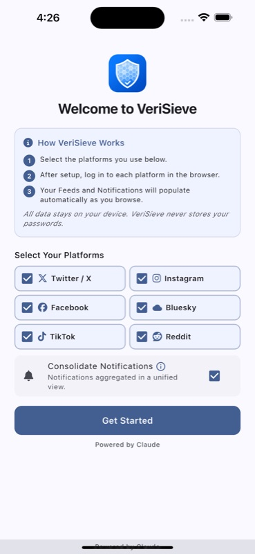
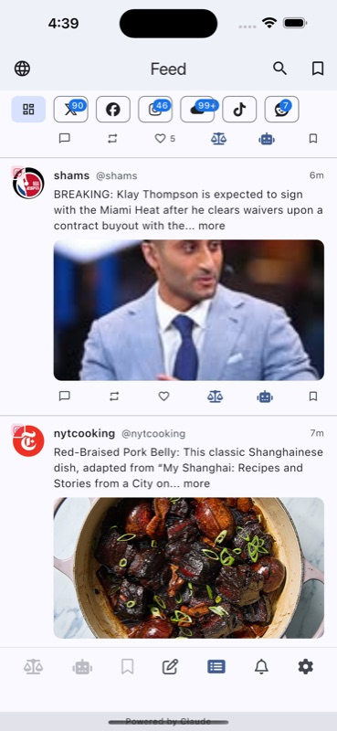
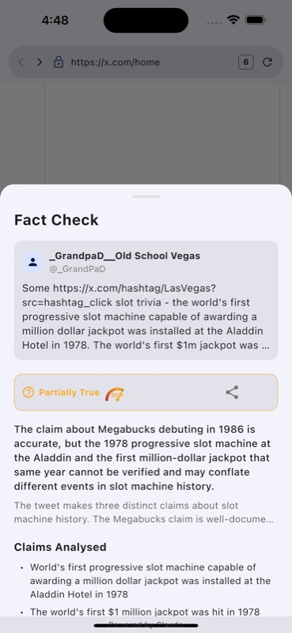
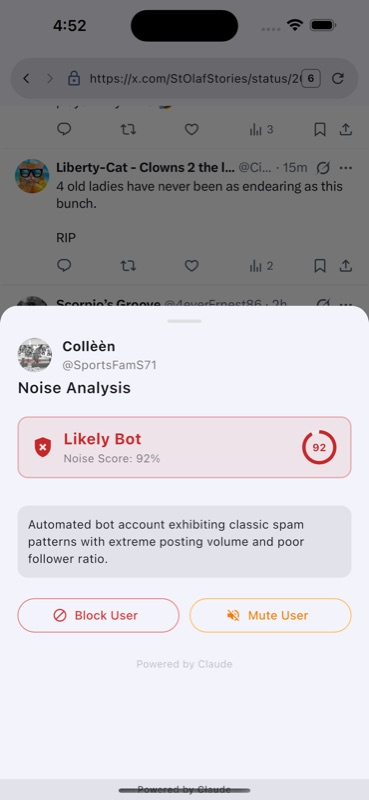
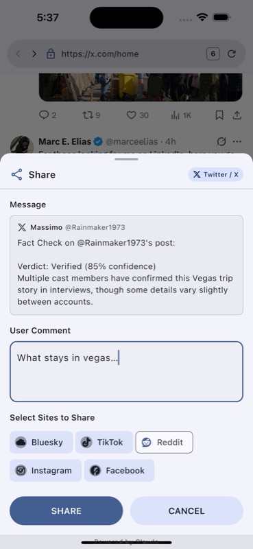
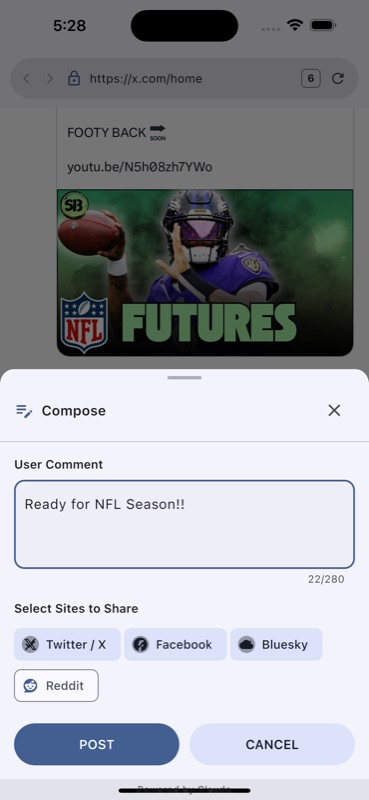
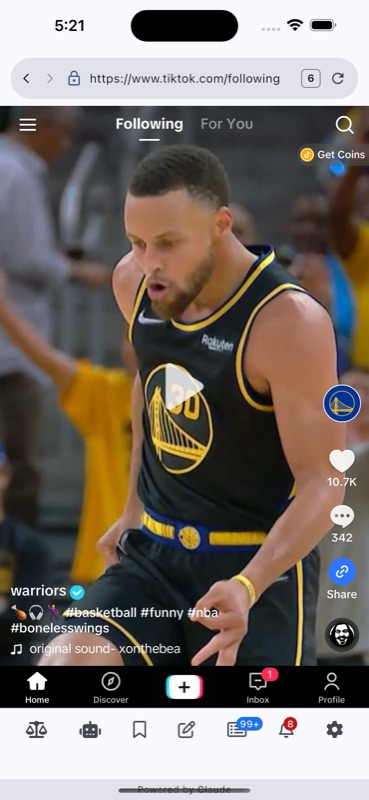
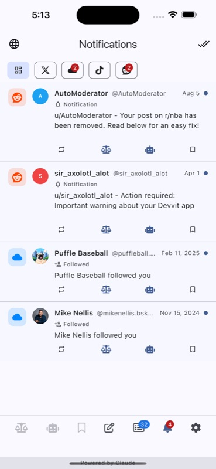

VeriSieve is a faster, ad-blocked browser for X, BlueSky, Instagram, Facebook, TikTok, and Reddit — with every feed consolidated in one place, AI-powered fact-checking, and bot detection built right in.








Scroll once instead of app-hopping six times.
Tap Fact Check on any post to get an AI-powered assessment, powered by Claude — right where you're reading, no extra app required.
Built-in ad-blocking keeps X, Reddit, and other platforms fast, clean, and distraction-free — no fighting sponsored posts or slow trackers just to see what your friends shared. Ad coverage varies by platform; a small number of ads may still slip through on some sites.
Built-in bot and noise detection flags accounts and content worth a second look, with a clear four-tier confidence badge.
Reply, repost, and like directly from the consolidated feed — no more juggling native apps for basic actions.
Save posts from any connected platform into one unified bookmarks list, filterable by platform.
Likes, replies, mentions, and follows from every connected platform, aggregated into a single stream.
Compose a single post and share it to X, Facebook, BlueSky, and Reddit at the same time — no more retyping the same update on every platform separately.
VeriSieve runs almost entirely on-device. No ad tracking, no analytics SDKs, no accounts of our own — your social platform sessions stay yours. Learn more in our Privacy Policy.